buumisc(5)
buu刷题目记录(第五页)
buumisc(5)
buu第五页，取证什么的后面在一块学习一下，目前暂时跳过了
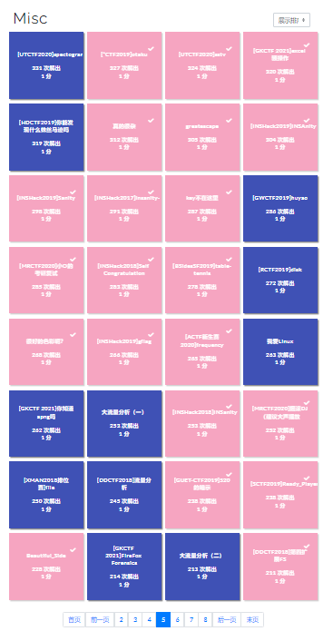
[*CTF2019]otaku
伪加密之后得到一个doc和一个zip，看到doc里面有大量信息，有空白，转换成GBK编码之后使用明文破解，得到密码My_waifu，解压后得到一个png+txt，zsteg分析png得到：zsteg flag.png
1 | *ctf{vI0l3t_Ev3rg@RdeN} |
[UTCTF2020]sstv
得到一个文件wav文件，然后根据题目提示得到sstv
kali下安装和使用sstv，安装apt-get install qsstv
打开后Options->Configuration->Sound勾选From file
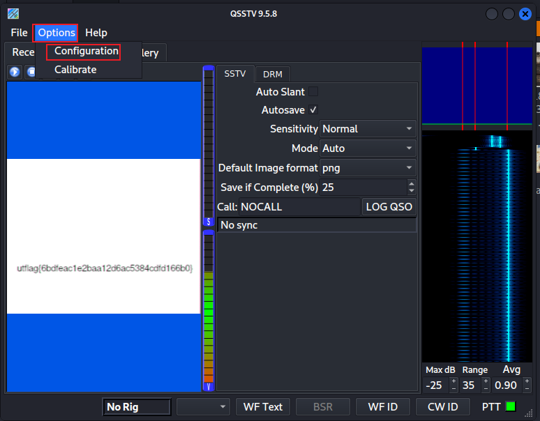 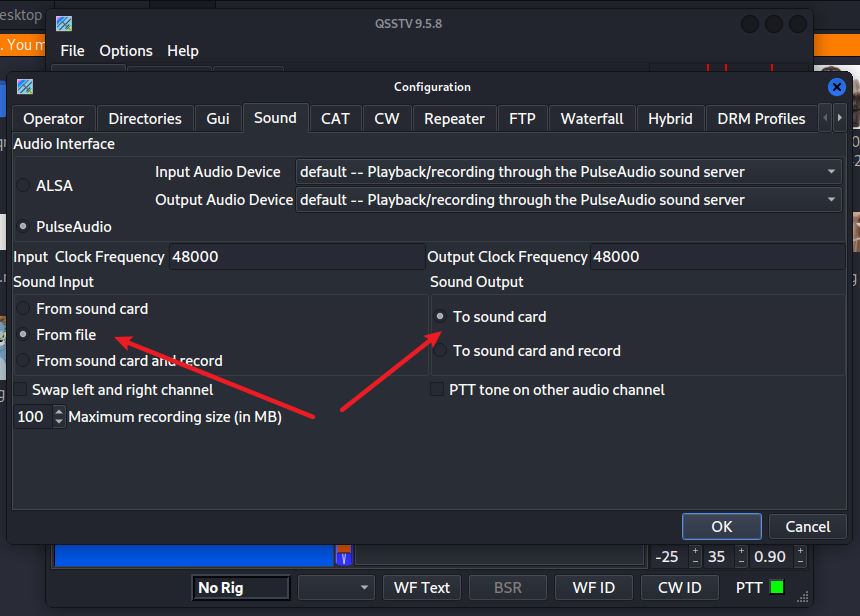然后选择音源，点击这个小箭头然后选择音源
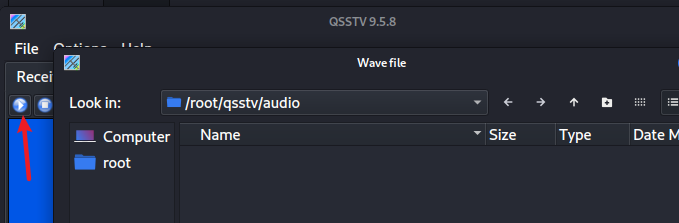
得到flag
1 | utflag{6bdfeac1e2baa12d6ac5384cdfd166b0} |
[GKCTF 2021]excel 骚操作
你真的了解excel吗
excel有的位置没有限制，但是里面有值，全选然后按照下图设置单元格格式，发现出来了很多个1
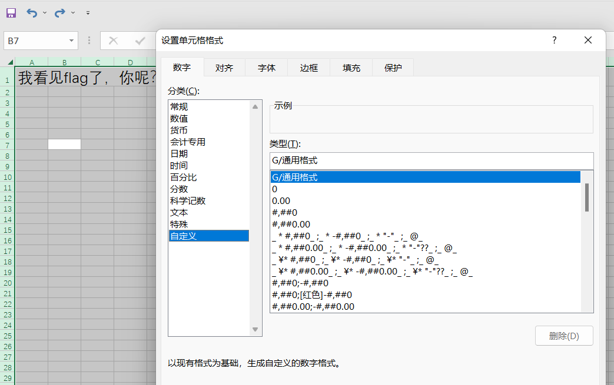
猜测是个二维码，然后把有数字的弄上颜色
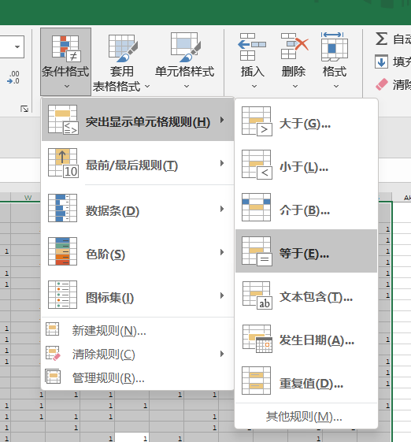
然后设置行高27，得到下面这个码，发现是汉信码
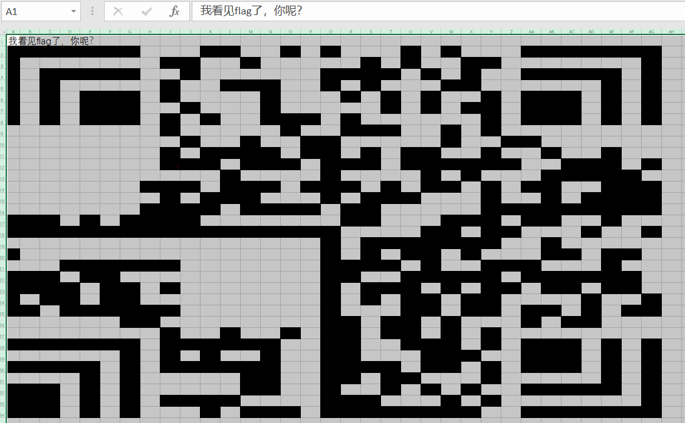
识别得到flag
1 | flag{9ee0cb62-f443-4a72-e9a3-43c0b910757e} |
真的很杂
binwalk+foremost分离得到jpg，png，zip文件夹，通过png文件夹猜测zip应该是个apk
需要用到工具dex2jar：下载：https://sourceforge.net/projects/dex2jar/ 把dex转换成jar
jd-gui：github地址： https://github.com/java-decompiler/jd-gui 把jar转换成java伪代码
把classes.dex放在文件夹dex2jar里：cmd执行命令：d2j-dex2jar.bat classes.dex
得到一个jar包，然后用这个包放在jd-gui中得到java代码
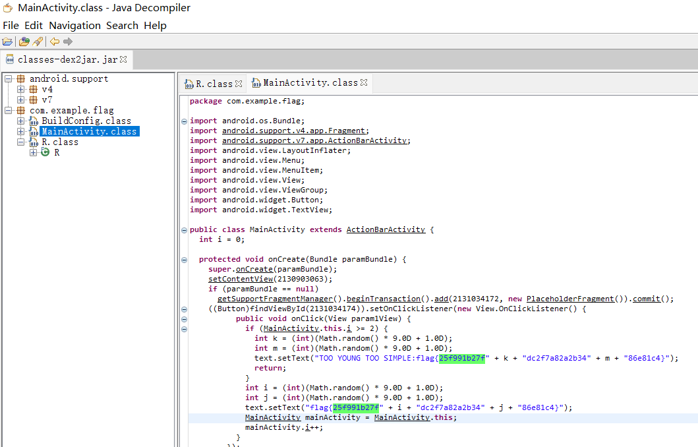
得到flag:”flag{25f991b27f” + i + “dc2f7a82a2b34” + j + “86e81c4}”);分析代码得到
1 | flag{25f991b27fcdc2f7a82a2b34386e81c4} |
greatescape
流量分析“tcp contains “你要找的关键字””可以快速定位到数据包
追中TCP流，在tcp.stream eq 18，发现ssc.key
在tcp.stream eq 19得到里面的内容，先存一个ssc.key
然后在编辑》首选项
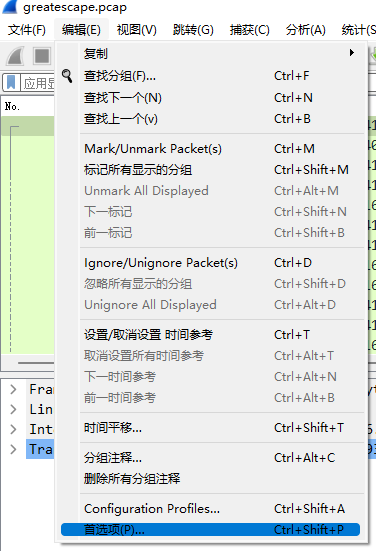
Protocols》TLS》edit》点击+》添加Key File》选择刚刚保存的ssc.key
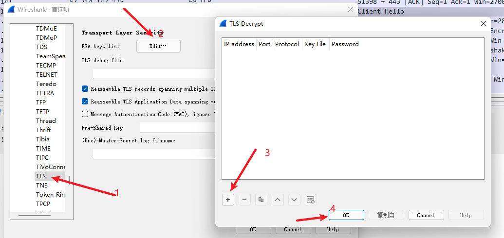
然后这个时候就能看到tls流里面的信息了，在tcp.stream eq 80发现flag
1 | INS{OkThatWasWay2Easy} |
[INSHack2019]INSAnity
Are you back for more INSAnity!?
** Warning ** : this challenge will cost you 2 points (but will give you soooo much fame)
打开就得到flag
1 | INSA{YouRe_Crazy_and_I_Love_it} |
[INSHack2019]Sanity
Welcome! Respect others, learn and have fun :)
打开就得到flag
1 | INSA{Welcome} |
[INSHack2017]insanity-
Challenge description:
We dare you to validate this challenge that will REALLY remove 2pts from your score! If you really are crazy, then here is your flag:
打开就得到flag
1 | INSA{Youre_crazy_I_like_it} |
[INSHack2018]INSanity
打开得flag
Are you playing?
1 | INSA{let_the_game_begin!} |
key不在这里
打开得到一个二维码，识别得到
1 | https://cn.bing.com/search?q=key%E4%B8%8D%E5%9C%A8%E8%BF%99%E9%87%8C&m=10210897103375566531005253102975053545155505050521025256555254995410298561015151985150375568&qs=n&form=QBRE&sp=-1&sc=0-38&sk=&cvid=2CE15329C18147CBA4C1CA97C8E1BB8C |
发现比较特殊
1 | 10210897103375566531005253102975053545155505050521025256555254995410298561015151985150375568 |
然后转化一下
1 | from urllib.parse import unquote |
1 | flag{5d45fa256372224f48746c6fb8e33b32} |
[MRCTF2020]小O的考研复试
打开有个公式需要我们跑结果
1 | a=2 |
得到flag
1 | flag{577302567} |
[INSHack2018]Self Congratulation
下载图片可以看到做左上角有个细节横着看
1 | 00110001001 |
转换得到12345678flag
1 | flag{12345678} |
[BSidesSF2019]table-tennis
过滤一下有DNS、TCP、TLS、ICMP流，过滤ICMP有html，看到1135包有信息
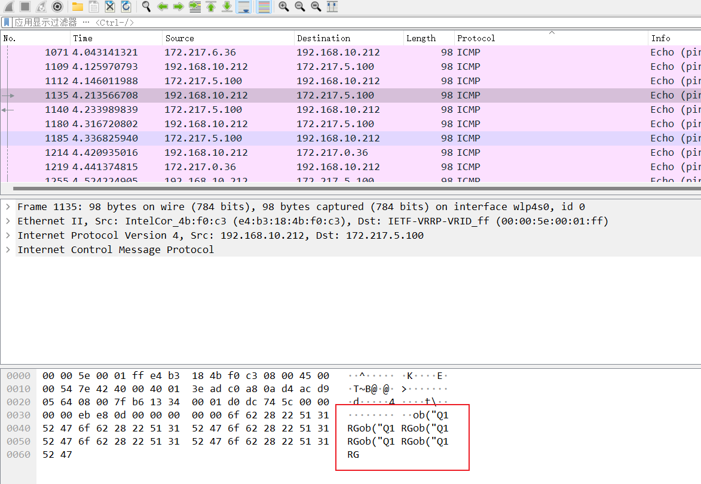
整理得到被下面内容
Q1RGe0p1c3RBUzBuZ0FiMHV0UDFuZ1Awbmd9经base64处理后得到flag
1 | CTF{JustAS0ngAb0utP1ngP0ng} |
很好的色彩呃？
得到条纹图，可能要识别颜色然后转字符，没有PS，就直接用QQ截图提取颜色
1 | 139，139，97 |
97，97，112，106，101，115>得到aapjes
1 | flag{aapjes} |
[INSHack2019]gflag
My brother likes esoteric programming. He sent me this file but I don’t see what it is for. Could you help me ?
猜测是一种programming，G语言https://ncviewer.com/可以在线运行，可以调整角度，得到flag
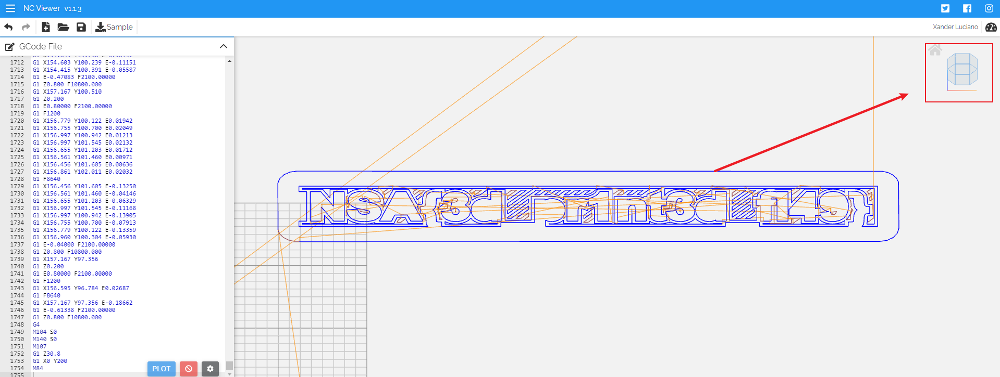
1 | NSA{3d_pr1nt3d_fl49} |
[ACTF新生赛2020]frequency
打开doc得到提示：你猜flag在哪？有两截哦：一部分在备注里面
通过base64然后字频统计得到actfplokmijnuhbygvrdxeszwq{}
1 | actf{plokmijnuhbygvrdxeszwq} |
[MRCTF2020]摇滚DJ
得到wav，用Av分析感觉是SSTv，用kali分析sstv得到
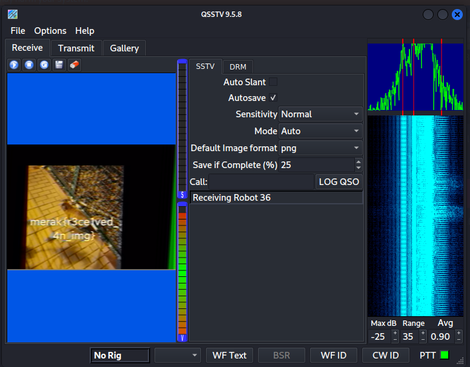
1 | merak{r3ce1ved_4n_img} |
[GUET-CTF2019]520的暗示
1 | data=open('photo.dat', 'rb').read() |
通过上面代码将每个字节跟0x33做异或操作，然后得到一个图片
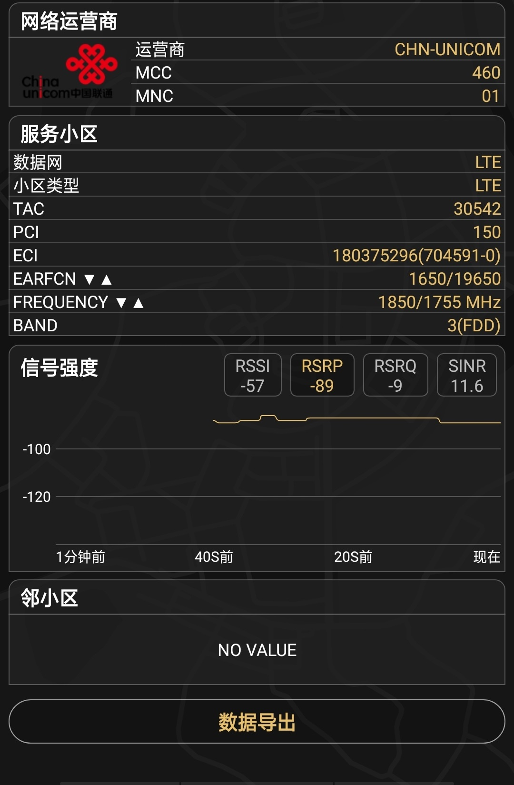
然后是社工可以用https://v.juhe.cn/cell/Triangulation/index.html?s=inner做基站地址定位
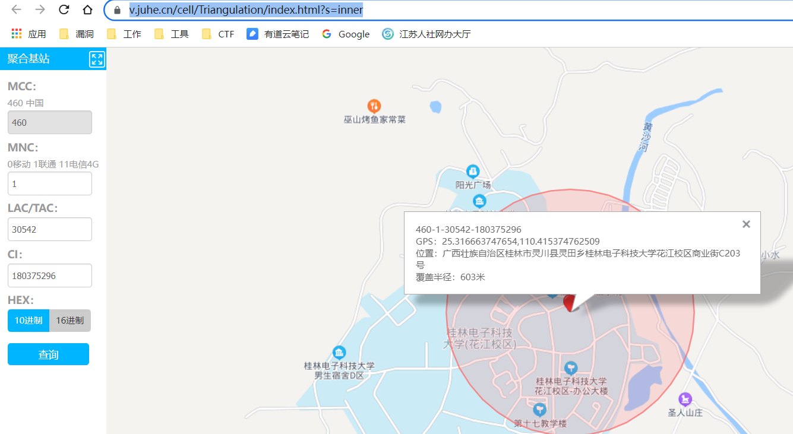
最后定位到桂林电子科技大学花江校区
1 | flag{桂林电子科技大学花江校区} |
[SCTF2019]Ready_Player_One
冲就行了
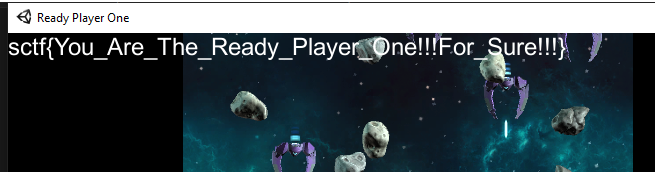
1 | sctf{You_Are_The_Ready_Player_One!!!For_Sure!!!} |
Beautiful_Side
听说最近二维码很火啊，呐，美丽的一半。
binwalk+foremost得到半张flag，然后通过https://merricx.github.io/qrazybox/在线补齐二维码
然后用tools
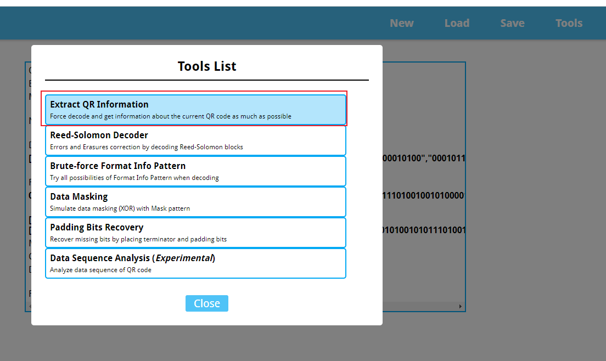
得到flag
1 | Flag{OQWIC_4DS1A_S034S} |
[DDCTF2018]第四扩展FS
右键得到备注：Pactera
binwalk+foremost得到一个zip，然后通过刚刚图片的备注里面的zip，得到一个txt，然后字频分析得到flag
1 | DCTF{huanwe1sik4o!} |
 微信
微信- 支付宝